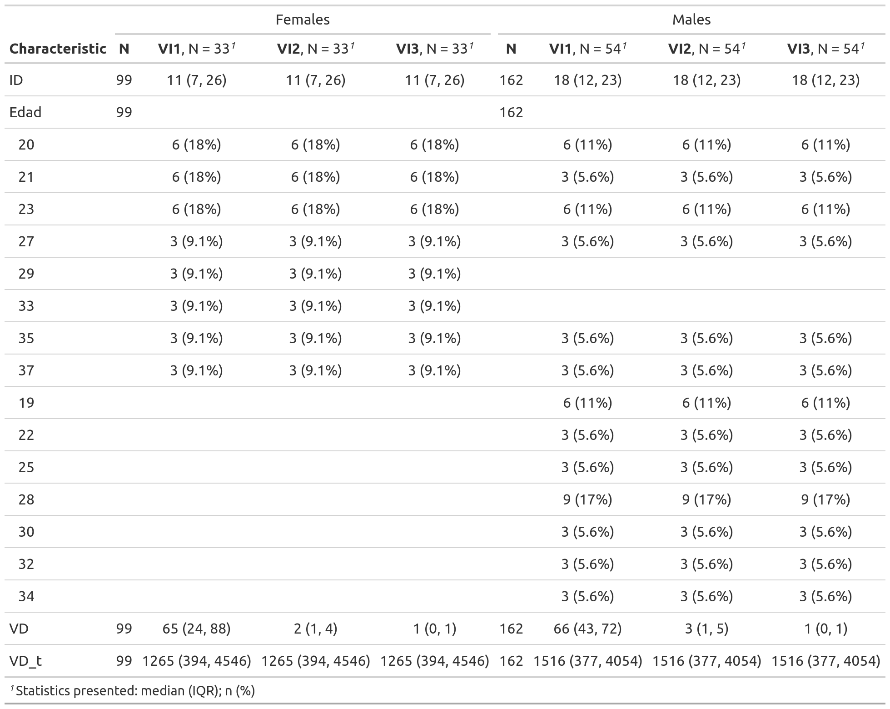
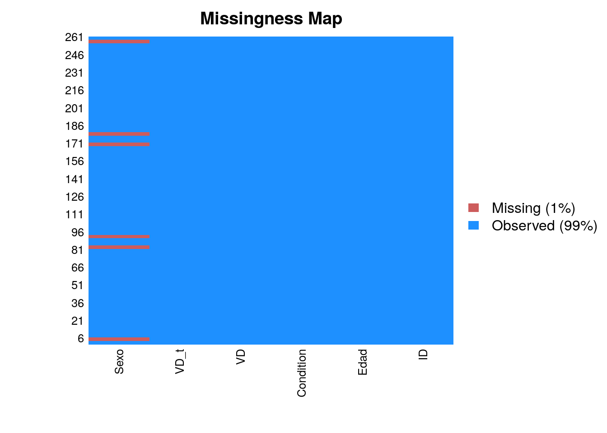
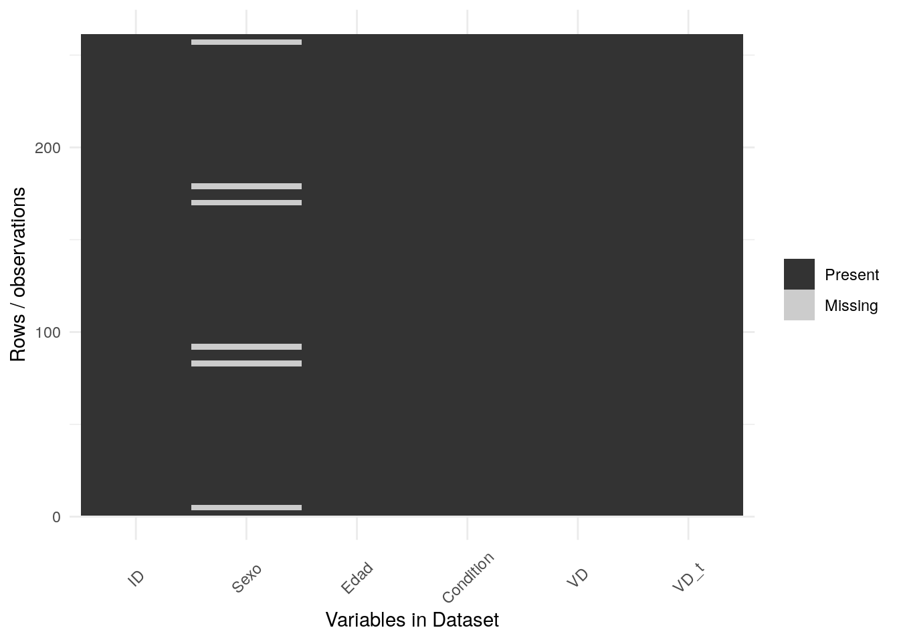
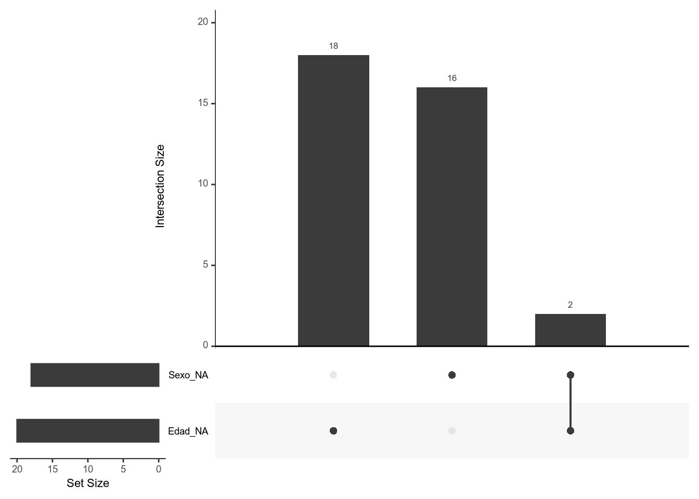

9 Estadistica descriptiva
- Vamos a usar la siguiente base de datos.
Cargamos librerias y leemos los datos
if (!require('findviews')) install.packages('findviews'); library('findviews')
if (!require('dplyr')) install.packages('dplyr'); library('dplyr')
if (!require('readr')) install.packages('readr'); library('readr')
if (!require('gt')) install.packages('gt'); library('gt')
if (!require('gtsummary')) install.packages('gtsummary'); library('gtsummary')
datos = read_csv(here::here("Data/07_Descriptive_statistics/Descriptive_statistics.csv")); datos## # A tibble: 261 x 6
## ID Sexo Edad Condition VD VD_t
## <dbl> <dbl> <dbl> <chr> <dbl> <dbl>
## 1 2 0 33 VI1 15 4893
## 2 2 0 33 VI1 15 9918
## 3 2 0 33 VI1 15 394
## 4 3 1 37 VI1 7 4099
## 5 3 1 37 VI1 7 6518
## 6 3 1 37 VI1 7 304
## 7 4 1 19 VI1 59 1792
## 8 4 1 19 VI1 59 9476
## 9 4 1 19 VI1 59 149
## 10 5 0 29 VI1 65 3280
## # … with 251 more rows9.1 Gtsummaries
- Para mas informacion y ejemplos de codigo: https://themockup.blog/posts/2020-09-04-10-table-rules-in-r/
Create a simple descriptive table:
gtsummary::tbl_summary(datos,
by = Sexo,
missing = "ifany") %>%
gtsummary::add_n()| Characteristic | N | 0, N = 991 | 1, N = 1621 |
|---|---|---|---|
| ID | 261 | 11 (7, 26) | 18 (12, 23) |
| Edad | 261 | 23.0 (21.0, 33.0) | 26.0 (21.0, 30.0) |
| Condition | 261 | ||
| VI1 | 33 (33%) | 54 (33%) | |
| VI2 | 33 (33%) | 54 (33%) | |
| VI3 | 33 (33%) | 54 (33%) | |
| VD | 261 | 2 (1, 24) | 3 (1, 43) |
| VD_t | 261 | 1265 (394, 4546) | 1516 (369, 4076) |
|
1
Statistics presented: median (IQR); n (%)
|
|||
More complex:
Create a table for each Sex, combine the two and save to a file.
table1 = gtsummary::tbl_summary(datos %>% dplyr::filter(Sexo == 0) %>% dplyr::select(-Sexo),
by = Condition,
missing = "ifany",
type = list(Edad ~ 'categorical'),
statistic = list(Edad ~ "{n} ({p}%)")) %>%
gtsummary::add_n()
table2 = gtsummary::tbl_summary(datos %>% dplyr::filter(Sexo == 1) %>% dplyr::select(-Sexo),
by = Condition,
missing = "ifany",
type = list(Edad ~ 'categorical'),
statistic = list(Edad ~ "{n} ({p}%)")) %>%
gtsummary::add_n()
table_combined_Sexo = gtsummary::tbl_merge(list(table1, table2), tab_spanner = list("Females", "Males"))
table_combined_Sexo| Characteristic | Females | Males | ||||||
|---|---|---|---|---|---|---|---|---|
| N | VI1, N = 331 | VI2, N = 331 | VI3, N = 331 | N | VI1, N = 541 | VI2, N = 541 | VI3, N = 541 | |
| ID | 99 | 11 (7, 26) | 11 (7, 26) | 11 (7, 26) | 162 | 18 (12, 23) | 18 (12, 23) | 18 (12, 23) |
| Edad | 99 | 162 | ||||||
| 20 | 6 (18%) | 6 (18%) | 6 (18%) | 6 (11%) | 6 (11%) | 6 (11%) | ||
| 21 | 6 (18%) | 6 (18%) | 6 (18%) | 3 (5.6%) | 3 (5.6%) | 3 (5.6%) | ||
| 23 | 6 (18%) | 6 (18%) | 6 (18%) | 6 (11%) | 6 (11%) | 6 (11%) | ||
| 27 | 3 (9.1%) | 3 (9.1%) | 3 (9.1%) | 3 (5.6%) | 3 (5.6%) | 3 (5.6%) | ||
| 29 | 3 (9.1%) | 3 (9.1%) | 3 (9.1%) | |||||
| 33 | 3 (9.1%) | 3 (9.1%) | 3 (9.1%) | |||||
| 35 | 3 (9.1%) | 3 (9.1%) | 3 (9.1%) | 3 (5.6%) | 3 (5.6%) | 3 (5.6%) | ||
| 37 | 3 (9.1%) | 3 (9.1%) | 3 (9.1%) | 3 (5.6%) | 3 (5.6%) | 3 (5.6%) | ||
| 19 | 6 (11%) | 6 (11%) | 6 (11%) | |||||
| 22 | 3 (5.6%) | 3 (5.6%) | 3 (5.6%) | |||||
| 25 | 3 (5.6%) | 3 (5.6%) | 3 (5.6%) | |||||
| 28 | 9 (17%) | 9 (17%) | 9 (17%) | |||||
| 30 | 3 (5.6%) | 3 (5.6%) | 3 (5.6%) | |||||
| 32 | 3 (5.6%) | 3 (5.6%) | 3 (5.6%) | |||||
| 34 | 3 (5.6%) | 3 (5.6%) | 3 (5.6%) | |||||
| VD | 99 | 65 (24, 88) | 2 (1, 4) | 1 (0, 1) | 162 | 66 (43, 72) | 3 (1, 5) | 1 (0, 1) |
| VD_t | 99 | 1265 (394, 4546) | 1265 (394, 4546) | 1265 (394, 4546) | 162 | 1516 (377, 4054) | 1516 (377, 4054) | 1516 (377, 4054) |
|
1
Statistics presented: median (IQR); n (%)
|
||||||||
# Save table
gtsave(as_gt(table_combined_Sexo), file = here::here("Resultados/table-combined-bysex.png"))
9.2 Summary de datos
# datos %>% group_by(Condition) %>% summarise(VD = mean(VD), sd = sd(VD))
datos %>%
group_by(Condition) %>%
summarise(sd = sd(VD), VD = mean(VD))## sd VD
## 1 31.20539 20.75862# datos %>% filter(Edad > 18) %>% group_by(Condition, Sexo) %>% summarise(VD = mean(VD), stdev = sd(VD), VD_t = mean(VD_t), num = length(VD))
datos %>%
filter(Edad > 18) %>%
group_by(Condition, Sexo) %>%
summarise(num = length(VD), stdev = sd(VD), VD = mean(VD), VD_t = mean(VD_t))## num stdev VD VD_t
## 1 261 31.20539 20.75862 2554.149# Todo en uno
datos %>%
group_by(Condition) %>%
summarise(num = length(VD), stdev = sd(VD), mean = mean(VD), max(VD), min(VD))## num stdev mean max(VD) min(VD)
## 1 261 31.20539 20.75862 99 09.2.1 Agrupamos por sujeto
datos %>%
group_by(ID) %>%
summarise(mean = mean(VD))## mean
## 1 20.758629.3 Descriptive tables latex
Using stargazer we can create tables showing summary statistics or a lm output. Here we use type = "html" to be able to show the table in this book. type = "latex" (default) shows the latex code.
if (!require('stargazer')) install.packages('stargazer'); library('stargazer')
stargazer(datos %>% as.data.frame(), type="html") | Statistic | N | Mean | St. Dev. | Min | Pctl(25) | Pctl(75) | Max |
| ID | 261 | 16.000 | 8.383 | 2 | 9 | 23 | 30 |
| Sexo | 261 | 0.621 | 0.486 | 0 | 0 | 1 | 1 |
| Edad | 261 | 26.207 | 5.767 | 19 | 21 | 30 | 37 |
| VD | 261 | 20.759 | 31.205 | 0 | 1 | 41 | 99 |
| VD_t | 261 | 2,554.149 | 2,702.144 | 13 | 380 | 4,099 | 9,918 |
9.4 Visualize missing values
With Amelia
if (!require('Amelia')) install.packages('Amelia'); library('Amelia')
datos = datos %>% mutate(Sexo = ifelse(Edad == 37, NA, Sexo))
missmap(datos)## Warning in if (class(obj) == "amelia") {: the condition has length > 1 and
## only the first element will be used## Warning: Unknown or uninitialised column: 'arguments'.
## Warning: Unknown or uninitialised column: 'arguments'.## Warning: Unknown or uninitialised column: 'imputations'.
With ggplot and reshape2
# With ggplot
# A function that plots missingness
if (!require('reshape2')) install.packages('reshape2'); library('reshape2')
if (!require('ggplot2')) install.packages('ggplot2'); library('ggplot2')
ggplot_missing <- function(x){
x %>%
is.na %>%
melt %>%
ggplot(data = .,
aes(x = Var2,
y = Var1)) +
geom_raster(aes(fill = value)) +
scale_fill_grey(name = "",
labels = c("Present","Missing")) +
theme_minimal() +
theme(axis.text.x = element_text(angle=45, vjust=0.5)) +
labs(x = "Variables in Dataset",
y = "Rows / observations")
}
ggplot_missing(datos)
if (!require('naniar')) install.packages('naniar'); library('naniar')
# Add some missing in Edad
set.seed(10)
missing = rbinom(261, 1, 0.3)
datos$Edad = with(datos, ifelse(Edad >= 30 & missing == 1, NA, Edad))
# Visualize upset plot
# Missing in Edad, Missing in Sexo, Missing in Sexo AND Edad
datos %>%
gg_miss_upset()
9.5 Tutorial externo
9.6 Findviews
Lanzar el siguiente comando para explorar visualmente los datos:
´findviews(datos)´
Ver pagina en Github